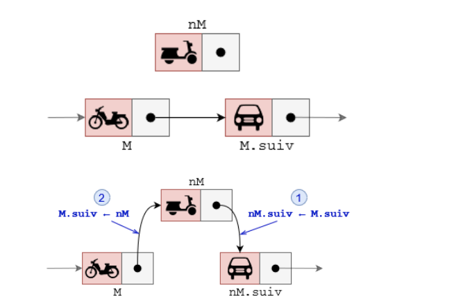
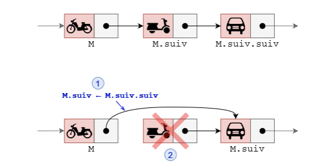

De nombreux algorithmes "classiques" manipulent des structures de données plus complexes que des simples nombres. Nous allons ici voir quelques-unes de ces structures de données. Nous allons commencer par les listes, et deux formes restreintes : les piles et les files. Ces trois types de structures sont qualifiés de linéaires.
Une structure de donnée possède un ensemble de routines (procédures ou fonctions) permettant d’ajouter,
d’effacer, d’accéder aux données. Cet ensemble de routines est appelé interface.
L’interface est généralement constituée de 4 routines élémentaires dites CRUD :
Create : ajout d’une donnée
Read : lecture d’une donnée
Update : modification d’une donnée
Delete : suppression d’une donnée
Derrière les opérations de lecture, de modification, ou de suppression d’une donnée se cache une autre routine tout aussi importante : la recherche d’une donnée.
Une liste est une structure de données permettant de regrouper des données. Le langage de programmation Lisp (inventé par John McCarthy en 1958) a été un des premiers langages de programmation à introduire
cette notion de liste (Lisp signifie "list processing").
On prendra des listes indicées à partir de 0.
Exemple de liste : L={Buzz ; x ; 1012 ; f9 ; Alan}
Dans cette liste, l’élément 2 est 1012. Cette liste comporte 5 éléments.
Pour implémenter les listes (ou les piles et les files), beaucoup de langages de programmation utilisent
un mélange de deux structures : les tableaux et les listes chaînées.
Si tous les éléments du tableau sont du même type, ils occupent tous la même taille en mémoire, soit
t. Il suffit alors de stocker l’adresse du premier élément, soit a et on accède à un élément d’indice k en
calculant son adresse en mémoire par a + k × t. Tous les éléments sont donc accessibles avec un coût
constant le temps de calcul de l’adresse et l’accès à cette adresse.
La place du tableau en mémoire est réservé à la création , soit n × t si n est le nombre d’éléments et t la taille d’un élément.
Une contrainte est l’impossibilité de remplacer un élément d’un type par un autre élément d’un autre
type ou d’agrandir la taille du tableau.
Dans certains langages de programmation, on trouve une version "évoluée" des tableaux : les tableaux
dynamiques. Les tableaux dynamiques ont une taille qui peut varier. Il est donc relativement simple d’insérer
des éléments dans le tableau. Ce type de tableaux permet d’implémenter facilement le type abstrait liste (de même pour les piles et les files).
À noter que les "listes Python" (listes Python) sont des tableaux dynamiques.
Attention à ne pas confondre avec le type abstrait liste défini ci-dessus, ce sont de "faux amis".
Problème Si on a besoin d’ajouter un élément à un tableau, on crée un nouveau tableau plus grand, on
copie les éléments de l’ancien tableau dans le nouveau, on ajoute le nouvel élément à la fin, on remplace l’ancien tableau par le nouveau, et enfin on supprime l’ancien tableau. Ce qui est extrèmement coûteux en nombre d’opération.
Une liste chaînée (ou liste liée) est une structure de données composées d’une séquence d’éléments de
liste.
Chaque enregistrement d’une liste chaînée est souvent appelé élément, nœud ou maillon.
La tête d’une liste est son premier nœud. La queue d’une liste peut se référer soit au reste de la liste
après la tête, soit au dernier nœud de la liste. Le champ de chaque nœud qui contient l’adresse du nœud
suivant ou précédent est généralement appelé lien ou pointeur. Le contenu est placé dans un ou plusieurs
autres champs appelés données, informations ou valeur.
Chaque élément (ou maillon) M de la liste est composé :
d’un contenu utile M.val de n’importe quel type),
d’un pointeur M.suiv pointant vers l’élément suivant de la séquence.
Le dernier élément de la liste possède un pointeur M.suiv vide.
Une liste chaînée L est entièrement définie par son maillon de tête L.tete, c’est à dire l’adresse de son
premier maillon.
Remarque : on peut également lui ajouter un attribut L.cur pour mémoriser l’adresse d’un maillon "courant"
On peut implémenter un maillon de liste chaînée en Python à l’aide d’une classe Maillon.
classMaillon:def__init__(self,valeur=None):self.val=valeurself.suiv=None# Pas de maillon suivant
Son attribut suiv est de type Maillon , ou bien vaut None si le maillon est le dernier de la liste.
Nous pouvons également implémenter une liste chaînée par une classe Liste_chainee :
Sur le modèle du code précédent, écrire la méthode taille(self) qui retourne la taille de la liste
chaînée.
Exercice 5 :
De même, écrire les méthodes get_dernier_maillon() qui retourne le dernier maillon de la chaîne,
et la méthode get_maillon_indice(i) qui retourne la maillon d’indice i.
Tip
Pour insérer un maillon nM après un maillon M , il faut :
Faire pointer le pointeur nM.suiv vers M.suiv
Faire pointer le pointeur M.suiv vers nM

Exercice 6 :
En suivant les schémas des interfaces d’insertion de maillon, implémenter en Python les fonctions
ajouter_debut(M), ajouter_fin(M) et ajouter_apres(i, M)
Tip
Pour supprimer le maillon suivant un maillon M , il faut :
Faire pointer le pointeur M.suiv vers M.suiv.suiv
Détruire (effacer de la mémoire) le maillon M.suiv

Exercice 7 :
En suivant les schémas des interfaces de suppression de maillon, implémenter les méthodes suivantes :
supprimer_debut() qui supprime le premier élement de la liste, supprimer_fin() qui supprime le
dernier élément de la liste et enfin supprimer_apres(i) qui supprime le maillon de la liste L situé
après le maillon d’indice i.
Remarque : Ces dernières méthodes doivent retourner le maillon supprimé.